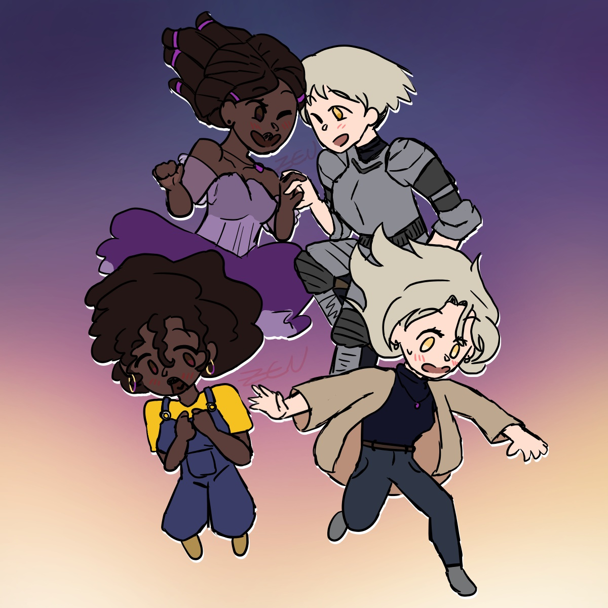

I'm currently attending the University of Texas at Dallas to complete my degree in Media Arts and Design to pursue a career in UX/UI Design. While I consider myself talented with graphic design and illustration, I am always eager to learn new skills and techniques.
